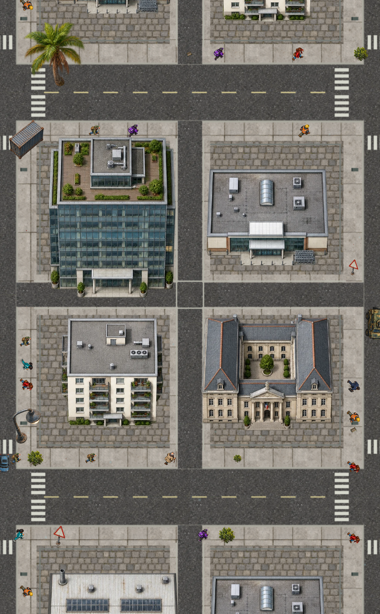
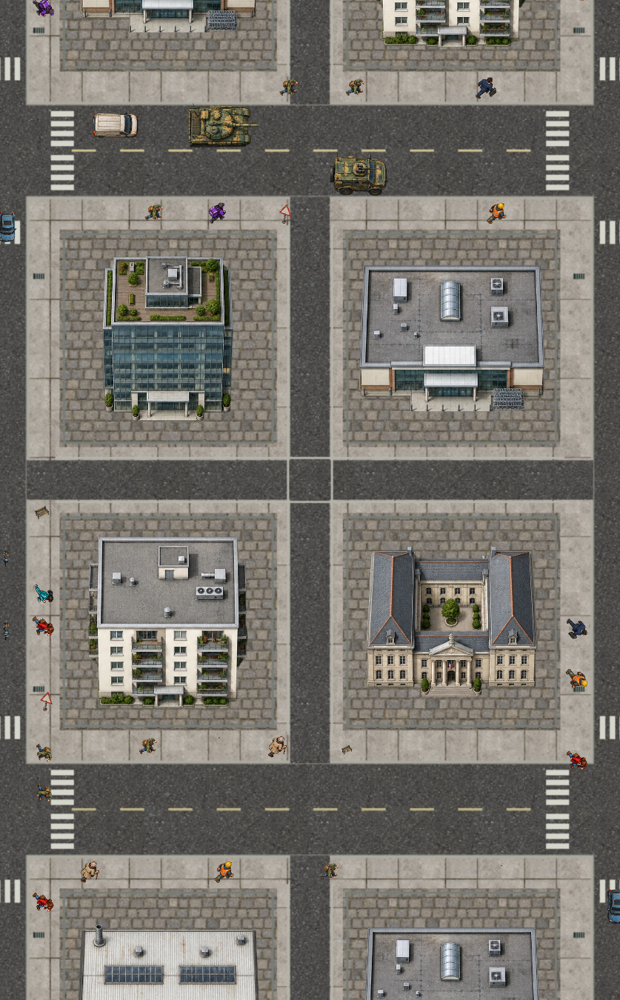
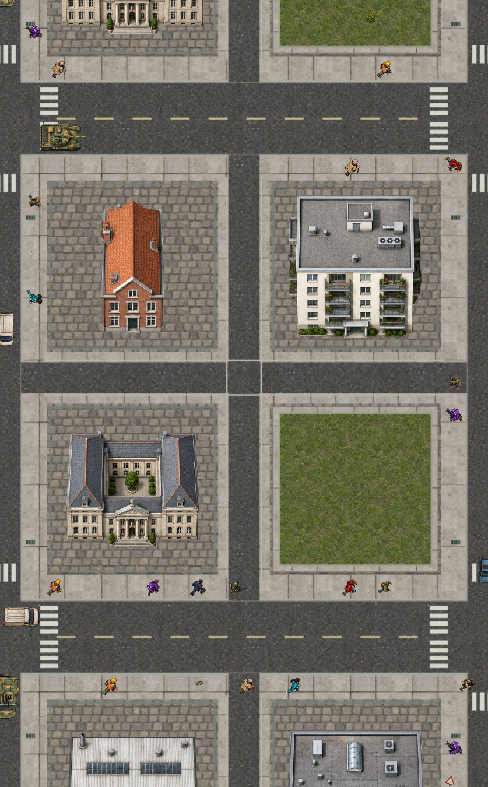
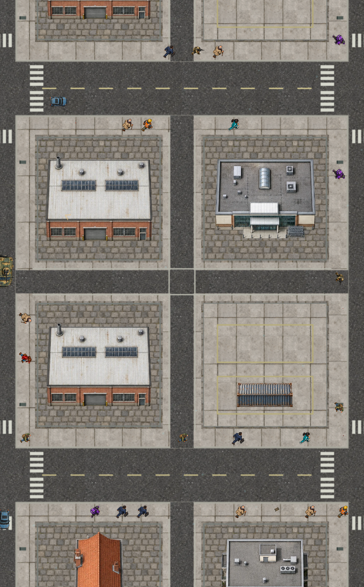

Candidata local · 30 de septiembre · aún no subida a TestFlightUna ciudad mejor colocada
Misma semilla, cámara y tamaño de imagen. Edificios centrados dentro de sus parcelas; jardines y zonas de carga separados de las calles. Se mantienen la cámara y los valores de biomasa de cada especie.
Antes
Ahora
Jardines y carga
Palmeras con orientación fija y césped delimitado
Contenedores alineados en sus plazas de carga
Capturas del render real del juego en navegador, sin el HUD para ver la colocación. No son capturas de TestFlight.